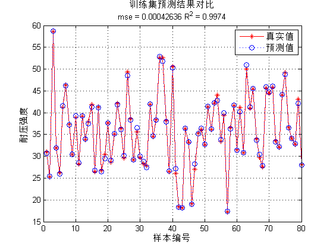
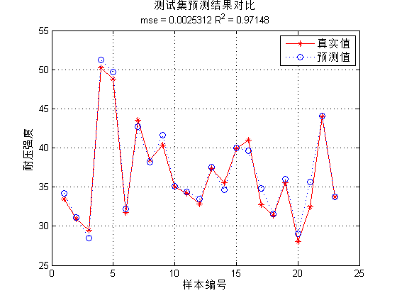
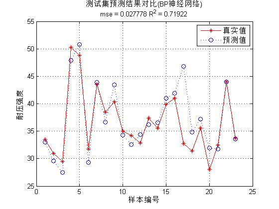

Contents
I. 清空环境变量
clear all
clc
II. 导入数据
load concrete_data.mat
1. 随机产生训练集和测试集
n = randperm(size(attributes,2));
2. 训练集——80个样本
p_train = attributes(:,n(1:80))'; t_train = strength(:,n(1:80))';
3. 测试集——23个样本
p_test = attributes(:,n(81:end))'; t_test = strength(:,n(81:end))';
III. 数据归一化
1. 训练集
[pn_train,inputps] = mapminmax(p_train');
pn_train = pn_train';
pn_test = mapminmax('apply',p_test',inputps);
pn_test = pn_test';
2. 测试集
[tn_train,outputps] = mapminmax(t_train');
tn_train = tn_train';
tn_test = mapminmax('apply',t_test',outputps);
tn_test = tn_test';
IV. SVM模型创建/训练
1. 寻找最佳c参数/g参数
[c,g] = meshgrid(-10:0.5:10,-10:0.5:10); [m,n] = size(c); cg = zeros(m,n); eps = 10^(-4); v = 5; bestc = 0; bestg = 0; error = Inf; for i = 1:m for j = 1:n cmd = ['-v ',num2str(v),' -t 2',' -c ',num2str(2^c(i,j)),' -g ',num2str(2^g(i,j) ),' -s 3 -p 0.1']; cg(i,j) = svmtrain(tn_train,pn_train,cmd); if cg(i,j) < error error = cg(i,j); bestc = 2^c(i,j); bestg = 2^g(i,j); end if abs(cg(i,j) - error) <= eps && bestc > 2^c(i,j) error = cg(i,j); bestc = 2^c(i,j); bestg = 2^g(i,j); end end end
2. 创建/训练SVM
cmd = [' -t 2',' -c ',num2str(bestc),' -g ',num2str(bestg),' -s 3 -p 0.01']; model = svmtrain(tn_train,pn_train,cmd);
V. SVM仿真预测
[Predict_1,error_1] = svmpredict(tn_train,pn_train,model); [Predict_2,error_2] = svmpredict(tn_test,pn_test,model);
Mean squared error = 0.000426362 (regression) Squared correlation coefficient = 0.997399 (regression) Mean squared error = 0.00253116 (regression) Squared correlation coefficient = 0.971479 (regression)
1. 反归一化
predict_1 = mapminmax('reverse',Predict_1,outputps); predict_2 = mapminmax('reverse',Predict_2,outputps);
2. 结果对比
result_1 = [t_train predict_1]; result_2 = [t_test predict_2];
VI. 绘图
figure(1) plot(1:length(t_train),t_train,'r-*',1:length(t_train),predict_1,'b:o') grid on legend('真实值','预测值') xlabel('样本编号') ylabel('耐压强度') string_1 = {'训练集预测结果对比'; ['mse = ' num2str(error_1(2)) ' R^2 = ' num2str(error_1(3))]}; title(string_1) figure(2) plot(1:length(t_test),t_test,'r-*',1:length(t_test),predict_2,'b:o') grid on legend('真实值','预测值') xlabel('样本编号') ylabel('耐压强度') string_2 = {'测试集预测结果对比'; ['mse = ' num2str(error_2(2)) ' R^2 = ' num2str(error_2(3))]}; title(string_2) 
VII. BP神经网络
1. 数据转置
pn_train = pn_train'; tn_train = tn_train'; pn_test = pn_test'; tn_test = tn_test';
2. 创建BP神经网络
net = newff(pn_train,tn_train,10);
3. 设置训练参数
net.trainParam.epochs = 1000; net.trainParam.goal = 1e-3; net.trainParam.show = 10; net.trainParam.lr = 0.1;
4. 训练网络
net = train(net,pn_train,tn_train);
5. 仿真测试
tn_sim = sim(net,pn_test);
6. 均方误差
E = mse(tn_sim - tn_test);
7. 决定系数
N = size(t_test,1); R2=(N*sum(tn_sim.*tn_test)-sum(tn_sim)*sum(tn_test))^2/((N*sum((tn_sim).^2)-(sum(tn_sim))^2)*(N*sum((tn_test).^2)-(sum(tn_test))^2));
8. 反归一化
t_sim = mapminmax('reverse',tn_sim,outputps);
9. 绘图
figure(3) plot(1:length(t_test),t_test,'r-*',1:length(t_test),t_sim,'b:o') grid on legend('真实值','预测值') xlabel('样本编号') ylabel('耐压强度') string_3 = {'测试集预测结果对比(BP神经网络)'; ['mse = ' num2str(E) ' R^2 = ' num2str(R2)]}; title(string_3)